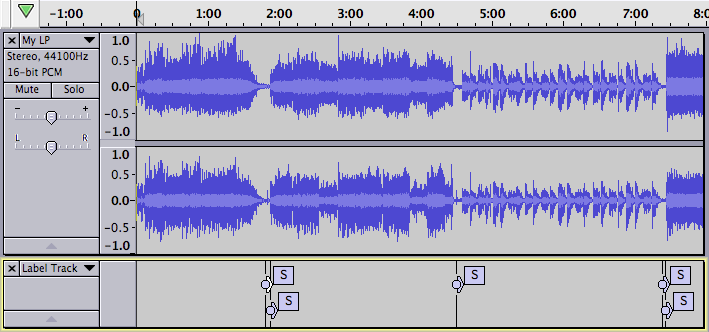
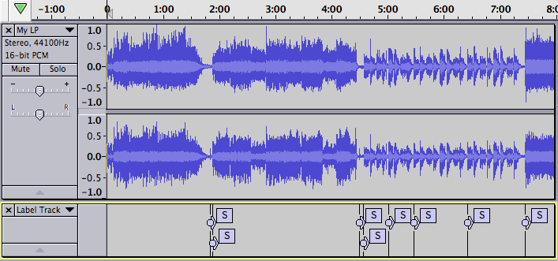
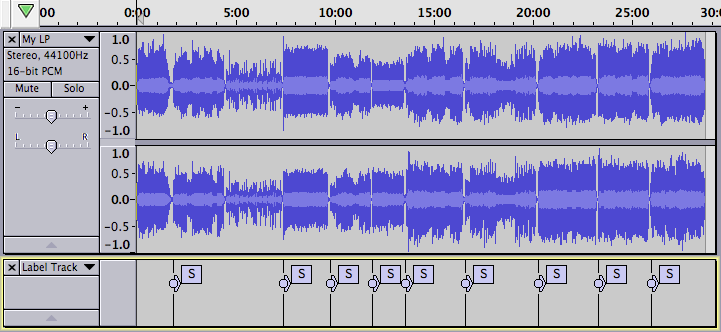

Silence Finder - Setting Parameters
From Audacity Development Manual
One way to quickly identify each song on the LP or cassette is to use the command. The trick is to find the combination of settings that will find all the gaps between songs without finding too many "false positives".
Note that in the images of examples on this page Scrub Ruler has been turned off.
Here are some of examples.
Running Silence Finder:
- Click on
- Click on
- Enter the following parameters into the Silence Finder dialog:
- Treat audio below this level as silence [- dB]: 30
- Minimum duration of silence [seconds]: 1.5
- Label placement [seconds before silence ends]: 0.1
- 
Perhaps we can do better by setting "Treat audio below this level as silence [- dB]" to 20.
- 
As a final example, here is the result of running the command on the entire album, then running the command with the parameters:
- Treat audio below this level as silence [- dB]: 30
- Minimum duration of silence [seconds]: 2
- Label placement [seconds before silence ends]: 0.1
- 
There are no false positives, and Silence Finder has successfully found the start of every song except number 3. At this point it is a simple matter to manually add a label at the start of song three.
The lesson here is that the Silence Finder command will probably work well on a recording that has no ticks and pops, and where no song has a gradual fade-in. In many cases you will still need to remove some false positives, and adjust the position of some of the generated labels.
Once you have the labels positioned properly you can then edit each label to correspond to the title of the song.
You may want to manually place a label to mark the first song.